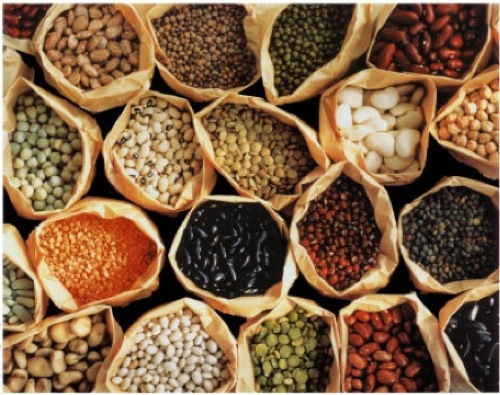
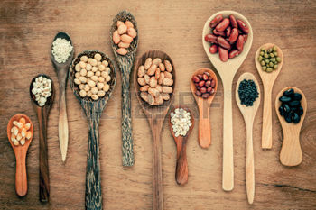
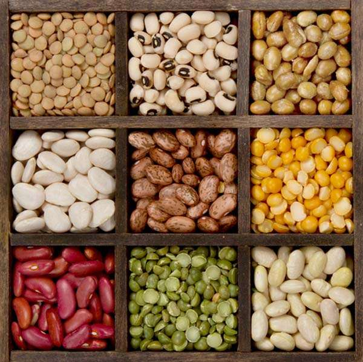
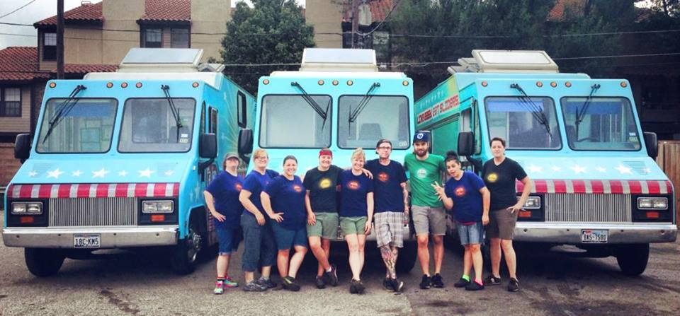

The Beaning of Life.
Across the globe, humble legumes of every color and size: from black turtle beans to white cannellinis, from tiny red lentils to giant cranberry beans, form the basis of classic, nourishing food enjoyed by rich and poor alike. The Bean Truck strives to bring these dishes to life for Philadelphia!
beans, beans, and more beans.

bean, mr. bean.

i bean, you bean, we all bean.

We are based on a simple philosophy: that healthy, tasty food can be affordable and fun! We draw on cuisines from around the world to make protein-rich, hearty food. Our beans are all organic and locally sourced. We get our eggs from the Lancaster Free Range Chicken Coop. Pork is from Ithaca, NY's Piggery. We make sure to provide the best ingredients around for our customers while giving back to the community!

The next time you need a real meal, made from fresh and local ingredients, look for the bean truck on a street near you! If you want to be cool, come to COOL BEANS.
i bean thinkin' about you.